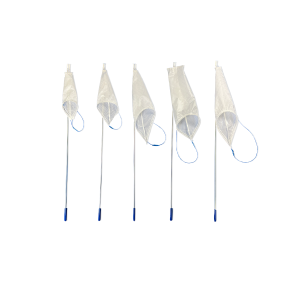

Espiner Medical was founded in 1990 following a collaboration between pioneering laparoscopic surgeon Harry Espiner and Jim Howard of Cameron Balloons.
Recognising the need for a strong, lightweight and leak-proof solution for tissue retrieval during laparoscopic surgery, they developed a unique retrieval sac using the same fabric technology employed in the manufacture of hot air balloons.
This innovative approach became the foundation of the Espiner range of tissue retrieval systems, which continues to be developed in collaboration with surgeons to support safe and efficient minimally invasive procedures.
In October 2015, Espiner Medical became part of Fannin UK, having already worked together for over 15 years. Today, the Espiner range continues to be supplied internationally through Fannin, part of Vital Medtech.